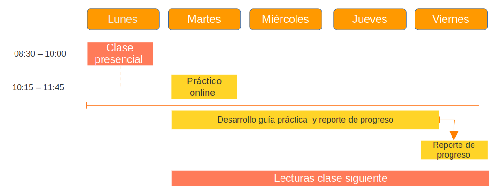

Planificación
Forma general de funcionamiento
Este curso se compone de tres actividades principales a la semana:
Clases lectivas presenciales: los lunes de 8:30 a 10:00, donde en base a las lecturas correspondientes a esa semana se presentará un resumen de los contenidos principales y se resolverán dudas.
Talleres prácticos online: los martes de 10:15 a 11:45 se desarrollarán actividades con énfasis en el manejo de software para análisis y reporte de los resultados. Estas instancias estarán guiadas por los apoyos docentes del curso.
Lecturas: cada sesión lectiva tiene una lectura obligatoria asignada a la semana, la que se encuentra a disposición en esta página.
Las actividades semanales se resumen en el siguiente esquema:

UNIDAD 1: Asociación y correlación
| Agosto | Clases | Prácticos | Lecturas |
| Lunes 07 | 1. Presentación: Asociación, inferencia y reporte | Leer detalladamente programa del curso | |
| Martes 08 | Reportes dinámicos 1 | ||
| Lunes 14 | Asociación 1: Bases | *Richtey 1-21 : La imaginación estadística | |
| Martes 15 | FERIADO | ||
| Lunes 21 | Asociación 2: Pearson | *Moore 97-131 Análisis de relaciones |
|
| Martes 22 | Cálculo y reporte correlación | ||
| Lunes 28 | Asociación 3: Matrices y tamaños de efecto | Field 205-244 Correlation | |
| Martes 29 | Matrices y tamaños de efecto | ||
UNIDAD 2: Asociación e inferencia
| Clases | Prácticos | Lecturas | |
|---|---|---|---|
| Septiembre | |||
| Lunes 4 | Inferencia 1 | Richtey cap 6 Pardo 33-49 Conceptos previos |
|
| Martes 5 | Inferencia 1 | ||
| Lunes 11 | Pausa | ||
| Martes 12 | Pausa | ||
| Lunes 18 | Feriado | ||
| Martes 19 | Feriado | ||
| Lunes 25 | Evaluación 1 | Richtey cap 7 | |
| Martes 26 | Reporte 2 | ||
| Octubre | |||
| Lunes 2 | Inferencia 2 | Moore cap 6 | |
| Martes 3 | Inferencia 2 | ||
| Lunes 9 | Feriado | ||
| Martes 10 | Reporte 3 | ||
| Lunes 16 | Inferencia 3 | Moore cap 7 | |
| Martes 17 | Inferencia 3 | ||
| Lunes 23 | Inferencia 4 | Moore cap 8 | |
| Martes 24 | Inferencia 4 | ||
| Lunes 30 | Evaluación 2 (30%) | ||
| Martes 31 |
UNIDAD 3: Asociación y categóricas
| Clases | Prácticos | Lecturas | |
|---|---|---|---|
| Noviembre | |||
| Lunes 6 | Semana trabajo autónomo | ||
| Martes 7 | Semana trabajo autónomo | ||
| Lunes 13 | Asociación con categóricas 1 | Moore cap 9 | |
| Martes 14 | |||
| Lunes 20 | Asociación con categóricas 2 | Richtey cap 13 | |
| Lunes 27 | Entrega trabajo final |